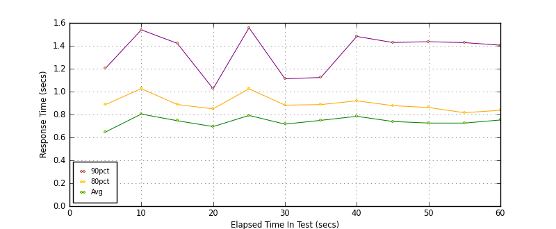
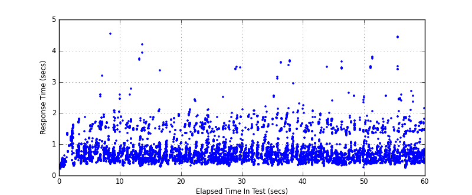
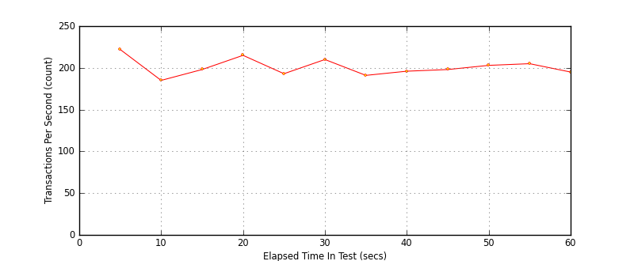

Performance Results Report
Summary
transactions: 12232
errors: 0
run time: 60 secs
rampup: 0 secs
test start: 2017-05-25 10:43:41
test finish: 2017-05-25 10:44:41
time-series interval: 5 secs
workload configuration:
| group name | threads | script name |
|---|
| user_group-10 | 10 | redis_stress.py |
| user_group-11 | 10 | redis_stress.py |
| user_group-12 | 10 | redis_stress.py |
| user_group-13 | 10 | redis_stress.py |
| user_group-14 | 10 | redis_stress.py |
| user_group-15 | 10 | redis_stress.py |
| user_group-2 | 10 | redis_stress.py |
| user_group-3 | 10 | redis_stress.py |
| user_group-1 | 10 | redis_stress.py |
| user_group-6 | 10 | redis_stress.py |
| user_group-7 | 10 | redis_stress.py |
| user_group-4 | 10 | redis_stress.py |
| user_group-5 | 10 | redis_stress.py |
| user_group-8 | 10 | redis_stress.py |
| user_group-9 | 10 | redis_stress.py |
All Transactions
Transaction Response Summary (secs)
| count | min | avg | 80pct | 90pct | 95pct | max | stdev |
|---|
| 12232 | 0.221 | 0.738 | 0.889 | 1.403 | 1.598 | 4.535 | 0.406 |
Interval Details (secs)
| interval | count | rate | min | avg | 80pct | 90pct | 95pct | max | stdev |
|---|
| 1 | 1111 | 222.20 | 0.221 | 0.647 | 0.886 | 1.203 | 1.371 | 1.859 | 0.333 |
| 2 | 926 | 185.20 | 0.368 | 0.804 | 1.026 | 1.539 | 1.680 | 4.535 | 0.434 |
| 3 | 992 | 198.40 | 0.300 | 0.746 | 0.887 | 1.422 | 1.551 | 4.196 | 0.399 |
| 4 | 1079 | 215.80 | 0.284 | 0.694 | 0.849 | 1.025 | 1.470 | 3.359 | 0.331 |
| 5 | 965 | 193.00 | 0.318 | 0.792 | 1.025 | 1.557 | 1.663 | 2.428 | 0.406 |
| 6 | 1054 | 210.80 | 0.297 | 0.716 | 0.882 | 1.112 | 1.501 | 3.477 | 0.366 |
| 7 | 955 | 191.00 | 0.303 | 0.749 | 0.887 | 1.123 | 1.599 | 2.213 | 0.347 |
| 8 | 984 | 196.80 | 0.328 | 0.784 | 0.919 | 1.482 | 1.815 | 3.680 | 0.479 |
| 9 | 991 | 198.20 | 0.297 | 0.739 | 0.878 | 1.429 | 1.647 | 3.470 | 0.384 |
| 10 | 1017 | 203.40 | 0.249 | 0.725 | 0.861 | 1.436 | 1.511 | 3.643 | 0.444 |
| 11 | 1029 | 205.80 | 0.348 | 0.725 | 0.816 | 1.428 | 1.518 | 3.796 | 0.440 |
| 12 | 979 | 195.80 | 0.246 | 0.752 | 0.837 | 1.405 | 1.640 | 4.436 | 0.464 |
Graphs
Response Time: 5 sec time-series

Response Time: raw data (all points)

Throughput: 5 sec time-series
